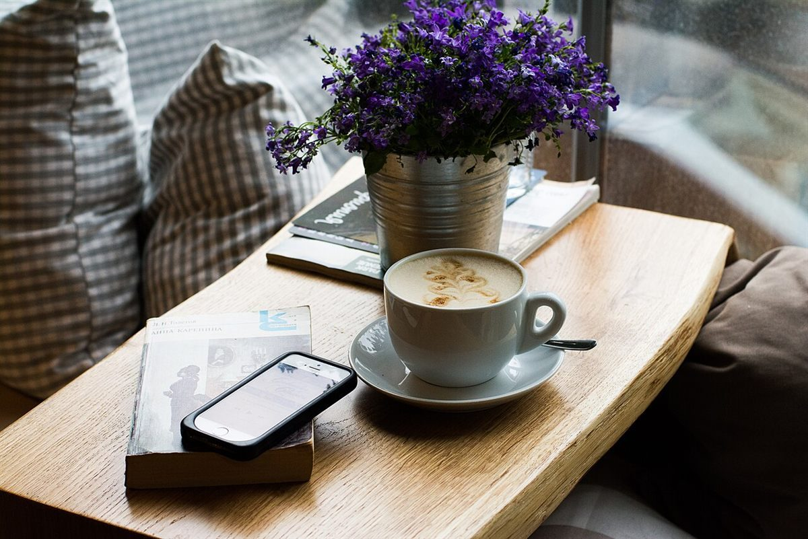

受信 01
イメージ例窓のそばで
夕方、窓の近くの席でぼんやりしていたら、いつのまにか灯りがついて、外の色と中の色が入れ替わった。時間がゆっくり進む場所でした。
口コミ
以下は制作側の創作で、実在のお客様の投稿ではありません。
夕方、窓の近くの席でぼんやりしていたら、いつのまにか灯りがついて、外の色と中の色が入れ替わった。時間がゆっくり進む場所でした。
ひとりでふらっと入っても気まずくなくて、本を読んで帰ってきました。また行きたいと思っています。
店名の意味を知って、なるほどと思いました。やわらかい明るさの店内で、気持ちが少しほどけた気がします。
上の3件は、サイト制作側が「こんな声が届くかもしれない」と想像して書いた創作です。実在のお客様の投稿ではなく、お店の実際のサービスを示すものでもありません。
